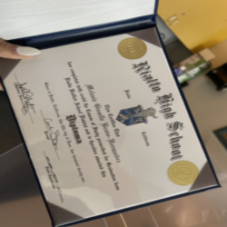
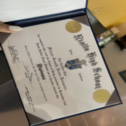

Melanie Bravo Hernandez
Since I am a college freshman, I do not have a lot of outside professional experience. I recently graduated high school, so I am barely starting out in the outside world. However, I was heavily involved in high school and learned many different things that have helped me professionally. The skills I learned in high school still apply to my life today.
For my work experience, I am a full time employee of a retail store, and I’ve been there for a little over a year. As of now, it is my first and only job. Within that time frame, I have learned a lot. At Walmart, I am a front end associate, so I mostly deal with customers and handle money. I was taught how to professionally communicate with customers and handle negative situations. Occasionally, I stock and label inventory. I have learned how to do other stuff as well. I mainly help out with claims, which is when we scan out any items that were damaged in the store. I am in charge of clearing them out from the front end area and taking them to the back by the end of the night. It is a long process. Management refers employees to me so that I can train new people how to do it as well.
Asides from that, I gained a majority of my experience in high school. I was in ASB (Associated Student Body) all four years. I learned a lot about what it means to be a leader. ASB was in charge of almost all of the main high school events, like pep rallies, football game nights, movie nights, etc. Being behind the scenes and communicating with administration and staff taught me everything I know about professionalism. The club itself was meant to be run by students, and the ASB advisor was mainly there to support us. My senior and junior year I was elected as an executive and I, alongside the others in my position, were in charge. There was 4 executives in total, and each of us had our own team. The last two years taught me how to take initiative and how to remain calm and professional during chaos. I am still using those skills in my present day life as well. The most important skill that ASB taught me was how to make my voice heard. We were strong advocates of speaking up whenever you felt that you needed to. The person that I was when I started was completely different by the end. The club I was also an AVID member, and I learned a lot about college. How to apply, time management, studying skills, etc. Note taking and time management are the most useful skills that I took from that club. AVID also held me accountable. For example, if it wasn’t for that class, I would’ve left my FAFSA and college applications up until the very last minute. That situation is what snapped me into being responsible. Another club I participated in was Key Club. This was mainly just a community service club, and I did a lot of volunteer work. I was in this club for two years.
Experience
Front End Cashier
• Provided excellent customer service
• Efficent on cash registers
• Handled customer returns and maintained positive attitude
Executive
• Responsible for running high school events
• Communicated with administration and staff
AVID Club Member
• Ran annual festivals for students
• Reviewed skills useful for college
• Prepared presentations for underclassmen
• Tutoring sessions for peers and underclassmen
Education
UC Riverside
Rialto High School
Portfolio
.jpg)

